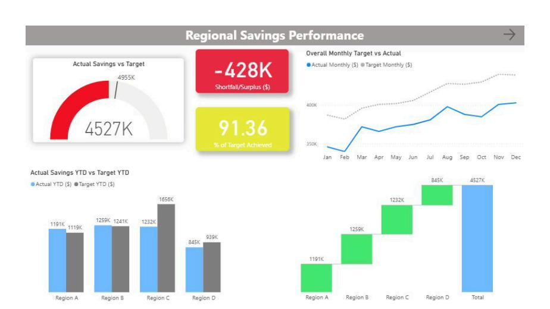
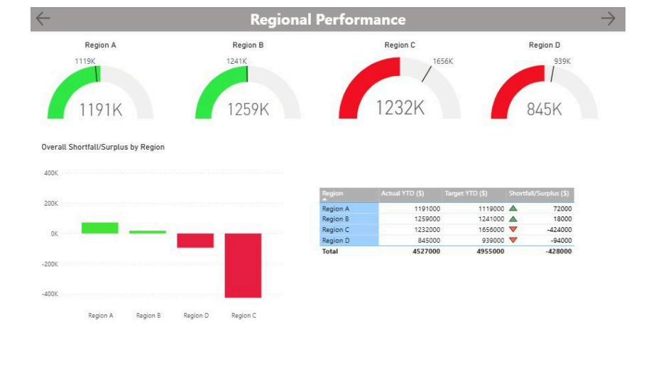
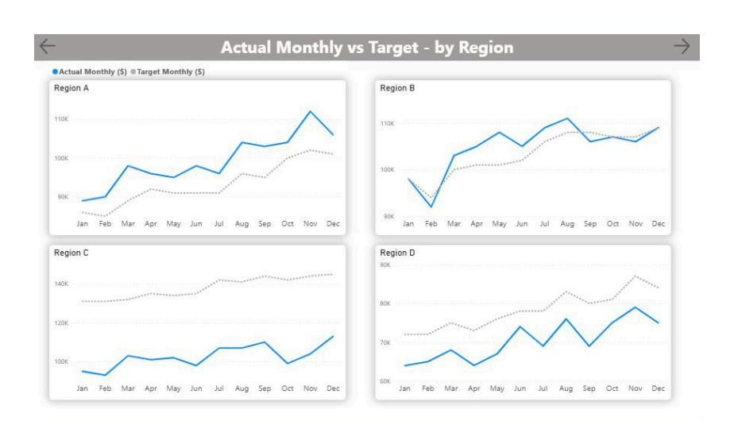
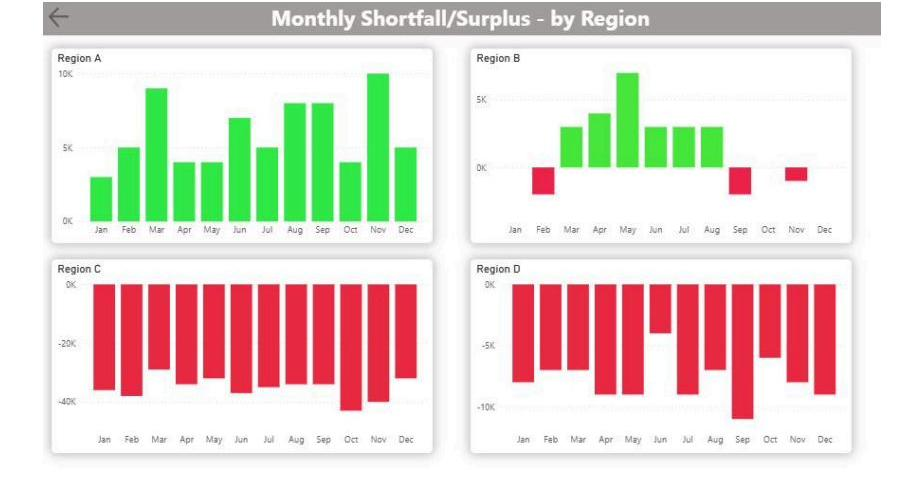

Work
Strategic Sourcing Savings Tracker
Built as a four-page Power BI report to track savings performance for a strategic sourcing initiative against target — from the total number, down to business unit, down to month — so a shortfall doesn't stay hidden behind an average.

Regional Savings Performance (overview)
At the total level, this initiative was $428K behind its year-to-date target — 91.36% of target achieved. The monthly trend shows actual performance closing the gap with target as the year goes on, but never fully catching up. The waterfall makes the next question obvious: which regions are pulling that number down, and which are holding it up?

Regional Performance
Breaking the total apart by business unit answers that question directly. Region A and Region B were both ahead of target (+72K and +18K). Region C was $424K behind — the main driver of the overall shortfall — and Region D was a further $94K behind. Four regions, two very different stories, one total number that would have hidden both.

Actual Monthly vs Target, by Region
The same breakdown, viewed by month instead of year-to-date. This is where trend direction shows up: Region A pulled further ahead of target as the year progressed, Region B tracked close to target with only brief dips below it, Region C stayed under target in every single month with a widening gap, and Region D closed its gap somewhat by year end without fully recovering. Two regions "behind target" on paper are not the same problem — one is getting worse, the other is getting better.

Monthly Shortfall/Surplus, by Region
The shortfall/surplus values behind those trend lines, month by month. Region A is in surplus almost every month. Region C is in shortfall every single month, and the shortfall is growing, not shrinking. That's the kind of detail a total YTD number can't surface, and exactly what a manager needs to know before deciding where to act.
This is the difference between knowing an initiative is "behind" and knowing why — which region, by how much, in which month, and whether it's getting better or worse. If your team needs this kind of visibility into where a target is being missed, email me and let's set up a 15-minute call.
Data shown is a synthetic dataset built to demonstrate this dashboard's structure and is not drawn from any employer's real figures.